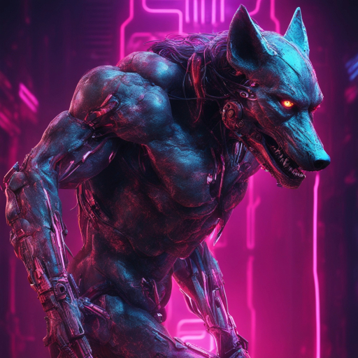

In the heart of the Digital Forest, there lived a remarkable coder known as Little Red Hood. She had a penchant for everything red, including her distinctive red hoodie, which she wore proudly. Her hood had an embroidered binary code design, and it was said to be so brilliant that it practically glowed with lines of code.
One day, Little Red Hood's grandmother sent her a message through a secure, encrypted channel. She said, "Little Red, my computer is feeling under the weather, and I need you to bring me this basket of troubleshooting tools and software updates. But remember, stick to the digital path and don't engage with any unverified sources." Little Red Hood, with her laptop in hand and a twinkle in her eye, replied, "Certainly, Grandma, I'll debug your computer right away!".
As she traversed the digital forest, she came across a group of tech-savvy animals who gathered around her. They paused their coding and development work to admire Little Red's exceptional hoodie. A wise old owl hooted, "Little Red, that is the most incredible hoodie we've ever seen. It's as eye-catching as your coding skills!". Little Red Hood smiled and said, "Thank you, friends. I love red and coding. It's in my DNA!". The animals couldn't help but appreciate her coding prowess and her sense of style.
While she was on her journey, Little Red Hood encountered a Wolf lurking in the digital underbrush. The Wolf was struck by her remarkable red hoodie and said, "Little Red, your coding skills are as dazzling as your hoodie! I can't possibly think of interrupting your important work". Little Red Hood, always on her guard, responded, "Mr. Wolf, you can admire my coding abilities all you want, but I have to deliver these crucial updates to my grandmother's computer". The Wolf, still captivated by her red hoodie, decided not to interfere and watched her continue on her way.
Little Red Hood reached her grandmother's digital lair and updated her software, fixed her security settings, and cleared her cache. Her grandmother, upon seeing her bright red hoodie, laughed and said, "Little Red, your coding talents shine as brightly as your hoodie's colors!". And so, Little Red Hood's coding journey through the digital forest became the talk of the tech community, and she continued to wear her remarkable red hoodie with pride. The Wolf, in the end, couldn't bring himself to disrupt the work of such a tech-savvy and confident coder.